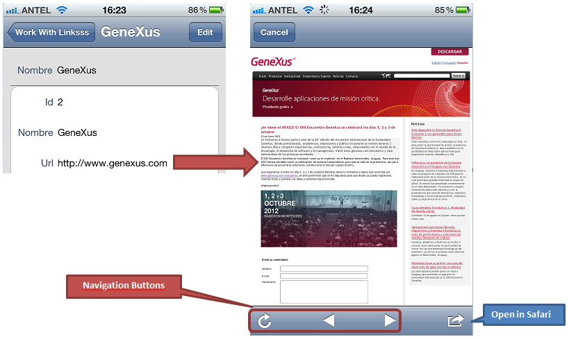

This domain is used to load URIs. In Edit mode, the information is entered as text using the platform’s input method. In View mode, the information is shown in textual form. Through a tap gesture allows locating this website using some native mechanism of the platform (generally, the browser by default). In iOS applications, URL is opened in a new modal window inside the application which has available navigation buttons and an "Open in Safari" action  The URL domain type is VarChar(1024). Note: the field defined under this semantic domain normally is not an optional enter, depending on the OS device and necessary when not optional. When applied to the Web, this data type is shown as a link in the Web Form.
|